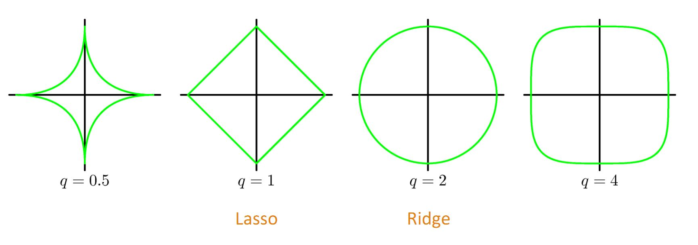
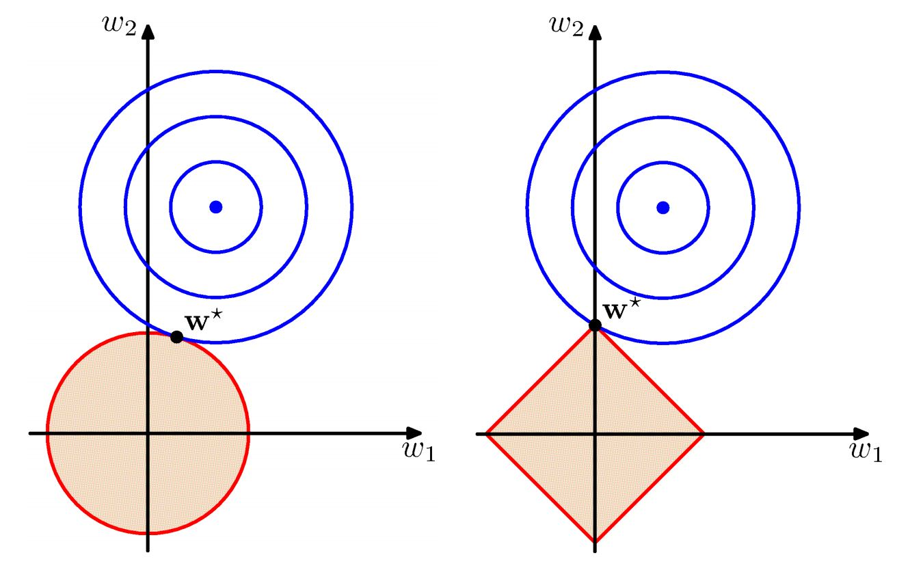

4. 过拟合¶
复杂的模型将训练数据的抽样误差考虑在内，对抽样误差也进行了拟合。过拟合的模型可以看成是完全记忆型模型。
4.1. 表现¶
训练误差小，测试误差大，泛化能力差。
4.2. 原因¶
- 训练集大小与模型复杂度不匹配；
- 样本的噪声太大甚至掩盖了真实样本的分布规律；
- 训练迭代次数太多（over-training）。
4.3. 解决方案¶
1. 调小模型复杂度。
2. data augmentation.
3. dropout. dropout 随机屏蔽了部分神经元的前向和反向传播，有利于保持神经元的独立性；由于每次迭代都屏蔽不同神经元，因此模型的训练过程可以看作是多个模型的集成。
4. early stopping. 记录观察validation accuracy，及时停止训练。
5. 集成学习。Bagging：并行化模型生成，减小模型variance。Boosting：串行化模型生成，减小模型bias。
6. 正则化。
- L0正则化（非0元素个数），难以优化求解（NP-Hard）。
- L1正则化（元素绝对值之和， Lasso regression），是L0范数的最优凸近似，使权值稀疏。权值稀疏的好处：特征选择 && 可解释性。
- L2正则化（元素平方和，Ridge regression / weight dacay），使权值分布均匀且值较小。
4.4. dropout 的 numpy 实现¶
前向传播：生成 mask，乘以当前层的激活函数输出。新的输出需要除以 keep_prob，保证能量一致。
反向传播：也要关闭 mask 对应的神经元，同样也需要除以 keep_prob。
\(\color{darkgreen}{Code}\)
1 2 3 4 5 6 7 8 9 10 11 12 13 14 15 16 17 18 19 20 21 22 23 24 25 26 27 28 29 30 31 32 33 34 35 36 37 38 39 40 41 42 43 44 45 46 47 48 49 50 51 52 53 54 55 56 57 58 59 60 61 62 63 64 65 66 67 68 | def forward_propagation_with_dropout(X, parameters, keep_prob = 0.5):
"""
Implements the forward propagation: LINEAR -> RELU + DROPOUT -> LINEAR -> SIGMOID.
Arguments:
X -- input dataset, of shape (2, number of examples)
parameters -- python dictionary containing your parameters "W1", "b1", "W2", "b2":
W1 -- weight matrix of shape (20, 2)
b1 -- bias vector of shape (20, 1)
W2 -- weight matrix of shape (1, 20)
b2 -- bias vector of shape (1, 1)
keep_prob - probability of keeping a neuron active during drop-out, scalar
Returns:
A2 -- last activation value, output of the forward propagation, of shape (1,1)
cache -- tuple, information stored for computing the backward propagation
"""
np.random.seed(1)
# retrieve parameters
W1 = parameters["W1"]
b1 = parameters["b1"]
W2 = parameters["W2"]
b2 = parameters["b2"]
# LINEAR -> RELU -> LINEAR -> SIGMOID
# Z1 = W1 x X + b1, A1 = relu(Z1), A1 = dropout(A1)
# Z2 = W2 x A1 + b2, A2 = sigmoid(Z2)
Z1 = np.dot(W1, X) + b1
A1 = relu(Z1)
# 4 steps
D1 = np.random.rand(Z1.shape[0], Z1.shape[1]) # Step 1: initialize matrix D1 = np.random.rand(..., ...)
D1 = D1 < keep_prob # Step 2: convert entries of D1 to 0 or 1 (using keep_prob as the threshold)
A1 = A1 * D1 # Step 3: shut down some neurons of A1
A1 = A1 / keep_prob # Step 4: scale the value of neurons that haven't been shut down
Z2 = np.dot(W2, A1) + b2
A2 = sigmoid(Z2)
cache = (Z1, D1, A1, W1, b1, Z2, D2, A2, W2, b2)
return A3, cache
|
1 2 3 4 5 6 7 8 9 10 11 12 13 14 15 16 17 18 19 20 21 22 23 24 25 26 27 28 29 30 31 32 33 34 35 36 37 38 39 40 41 42 43 44 45 46 47 48 49 50 51 52 53 54 | def backward_propagation_with_dropout(X, Y, cache, keep_prob):
"""
Implements the backward propagation of our baseline model to which we added dropout.
Arguments:
X -- input dataset, of shape (2, number of examples)
Y -- "true" labels vector, of shape (output size, number of examples)
cache -- cache output from forward_propagation_with_dropout()
keep_prob - probability of keeping a neuron active during drop-out, scalar
Returns:
gradients -- A dictionary with the gradients with respect to each parameter, activation and pre-activation variables
"""
m = X.shape[1]
(Z1, D1, A1, W1, b1, Z2, D2, A2, W2, b2) = cache
dZ2 = A2 - Y # logistic regression
dW2 = 1./m * np.dot(dZ2, A1.T) # logistic regression
db2 = 1./m * np.sum(dZ2, axis=1, keepdims = True)
dA1 = np.dot(W2.T, dZ2)
dA1 = D1 * dA1 # Step 1: Apply mask D1 to shut down the same neurons as during the forward propagation
dA1 = dA1 / keep_prob # Step 2: Scale the value of neurons that haven't been shut down
dZ1 = np.multiply(dA1, np.int64(A1 > 0)) # Hadamard product, i.e., element-wise product
dW1 = 1./m * np.dot(dZ1, X.T)
db1 = 1./m * np.sum(dZ1, axis=1, keepdims = True)
gradients = {
"dA2": dA2, "dZ2": dZ2, "dW2": dW2, "db2": db2,
"dA1": dA1, "dZ1": dZ1, "dW1": dW1, "db1": db1
}
return gradients
|
4.5. 附：正则化¶
\[L_q\text{-norm}: \ \| w \|^q_q = \sum_j | w_j |^q.\]


{kind=link}
{kind=link}
我们通常只对权重（weight）做正则惩罚，而不对偏置（bias）做正则惩罚。精确拟合偏置所需的数据通常比拟合权重少得多。每个权重会指定两个变量（前层-后层） 如何相互作用，我们需要在各种条件下观察这两个变量才能良好地拟合权重；而每个偏置仅控制一个单变量（后层），这意味着：即使不对其进行正则化也不会导致太大的方差。 另外，对偏置进行正则化可能导致明显的欠拟合。
- No Free Lunch Theorem
- 没有一个机器学习算法总是比其他算法好。这意味着机器学习研究不是要找一个通用的学习算法或是最好的学习算法，而是理解 什么样的分布与人工智能获取的经验分布相关，以及什么样的学习算法在我们关注的数据分布上效果更好。
- Occam’s Razor
- 如果关于同一个问题有许多种理论，每一种都能作出同样准确的预言，那么应该挑选其中使用假定最少的。尽管越复杂的方法通常能做出越好的预言，但是在不考虑预言能力（即结果大致相同）的情况下，假设越少越好。